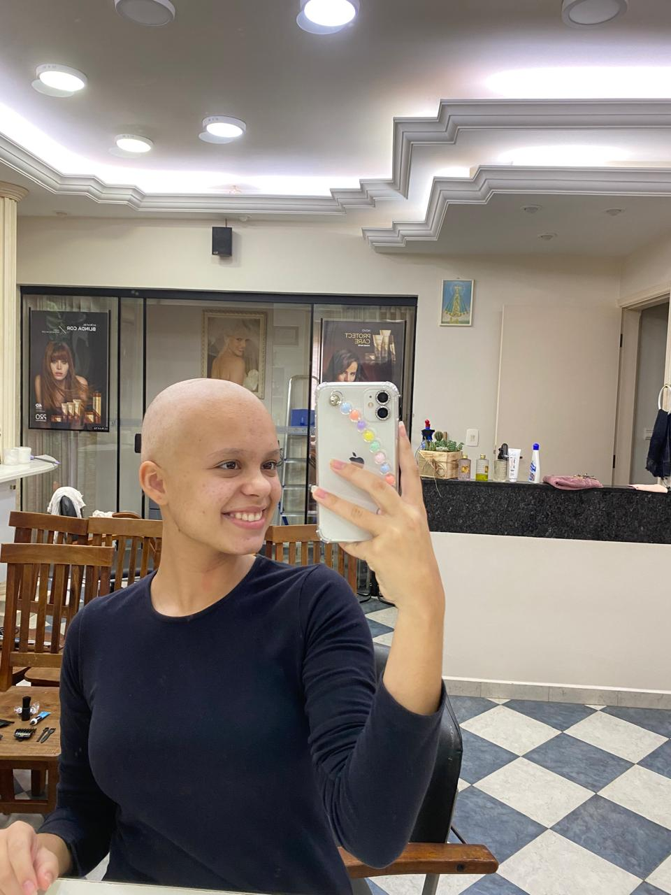

UM POUCO SOBRE MIM
Minha história
Cada experiência faz parte de quem sou e contribui para a pessoa que desejo me tornar.
Quem sou eu?
Meu nome é Sophia e sou uma pessoa que acredita na importância dos sonhos, da dedicação e do aprendizado constante.
Desde pequena, tenho o sonho de seguir a carreira de Medicina. Ao longo da minha vida, passei por experiências que contribuíram para minha forma de enxergar o mundo e meu futuro.
Gosto de aprender coisas novas, conhecer diferentes áreas e buscar oportunidades que contribuam para meu crescimento pessoal e profissional.
O que me motiva?
Minha história é construída por sonhos, desafios, aprendizados e pela vontade de conquistar meus objetivos. Acredito que cada etapa da vida tem algo importante a ensinar.
Uma experiência que marcou minha história
Durante minha trajetória, passei por um tratamento oncológico que marcou profundamente minha vida. Foi uma experiência que me proporcionou novos aprendizados e mudou minha maneira de enxergar muitas coisas.
Essa vivência fortaleceu ainda mais meu desejo de seguir a Medicina. Passei a admirar ainda mais o trabalho dos profissionais da saúde e desenvolvi um carinho especial pela Pediatria.
